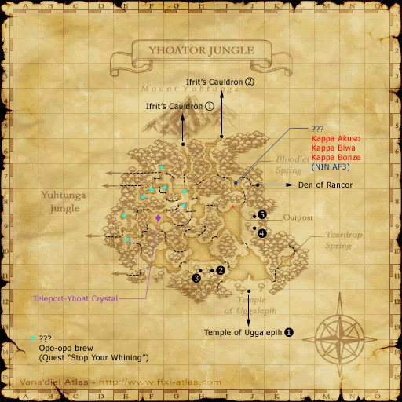

Before you begin
- Complete Kazham’s Chieftainess and possess the Sacrificial Chamber Key.
- Prepare an Unlit Lantern and access to Paintbrush of Souls; one lantern can be reused for four trips. A group can bring four lanterns to reduce travel.
Starting point
Mahogany Door (battlefield entrance) · Sacrificial Chamber
Walkthrough
- Obtain Paintbrush of Souls if needed: get an Uggalepih Key from Tonberry Cutters, trade it to the temple’s Granite Door at F-7 (map 1), read all three Worn Books for an Old Rusty Key, then open the Old Casket.
- Farm Unlit Lanterns from Tonberry Maledictors in the temple or Tonberry Imprecators in the Den. Reduce accumulated Tonberry hate before the boss fight.
- From the temple’s main map, leave at F-5 and re-enter from Yhoator Jungle H-11. Defeat Temple Guardian at I-10 (map 2), pass its door, then reach the painting room at I-7.
- Face the empty eastern frame closely with Paintbrush of Souls. Once the painting message appears, wait at least 30 seconds before advancing the dialogue. Enter the Den of Rancor through the opened passage.
- Trade an Unlit Lantern to the Altar of Rancor at E-5 (map 1). Carry the resulting Rancor Flame through the F-7 drop to E-5 (map 2), and trade it to one unlit stone lantern. Light all four; repeat the altar journey if necessary.
- Enter the Sacrificial Chamber and select the mission battle at its Mahogany Door. Defeat Grav’iton, Molyb’iton and Tungs’iton. Watch the post-battle scenes to receive the Dark Fragment.
Battle and progress notes
- Grav’iton cannot be slept; keep the casters controlled. Everyone’s Rancor punishes accumulated Tonberry kills, and Tungs’iton can use Astral Flow.
- The pinned native battlefield allows Trusts, up to six participants and 30 minutes, with the server maximum level as its cap. This is a code check, not a completed Zenith solo test.
Completion and reward
Dark Fragment; title: Bearer of the Wisewoman’s Hope.
What this opens
Area maps
Open a zone below, then select a map to enlarge it. Match the named floors and grid coordinates in the steps; these are reference area maps, not a live position tracker.
Yhoator Jungle



Temple of Uggalepih


Den of Rancor


Kazham


Zone guides
References
- HorizonXI Wiki: Zilart Mission 4
- HorizonXI Wiki: Paintbrush of Souls
- HorizonXI Wiki: Unlit Lantern
- HorizonXI Wiki: Uggalepih Key
- Reviewed mission implementation
- Reviewed mission implementation
Steps are an original summary of the linked walkthrough and reviewed source. Other servers’ bonus rewards are not included. How to read requirements, waits and battlefield notes.
Additional level-75 reference
Eden: Party only needs one Unlit Lantern but four Rancor Flame are necessary in order to get into the Sacrificial Chamber. Do not make the same mistake we made by clicking the crimson one by mistake. In Den of Rancor, you can get THREE I repeat THREE different flames in order to go "deeper" into the zone. So use the one near the entrance and be careful because you will have to farm them again if you pick the wrong flame. Might as well farm four Unlit Lantern but keep in mind they are lottery spawns all over the map so feel free to find the best spot for the most spawns. I found the 2nd map had a lot of them versus the first map. If your planning to access the "Sacrificial Chamber" via "Den of Rancor" (map #2) located at E-5 then please know that you can ONLY use the "Rancor Flame" located on "Den of Rancor" (map #1) located at D-5/E-5. Yes you will need an "Unlit Lantern" which is farmable from the various Tonberry Imprecator on both maps.
|
Walkthrough
- Walk through the Temple of Uggalepih
- To get into the Den of Rancor, at least one person will need a Paintbrush of Souls.
- The NMs involved with this mission use a variant of Everyone's Grudge called Everyone's Rancor which does ten times as much damage as Grudge, and will often kill your tank in one attack if they haven't reset their Tonberry Hate.
- You have to kill some Tonberries for Unlit Lanterns, so you will need to reset your hate after that.
- If you Call for Help when killing a Tonberry, no Tonberry Hate will be accrued.
- It is strongly recommended that at least one party member be level 75, as the weak monsters you will go past inside the Temple will not aggro them. This will allow them to open doors inside the Temple while the lower level party members remain invisible. Only invisible is needed inside the Temple, while both sneak and invisible are needed for all party members inside the Den of Rancor.
Uggalepih
- To get into the Sacrificial Chamber in the Den of Rancor you will need to obtain four Unlit Lanterns which will help open the gate.
- The lanterns are dropped by Tonberry Maledictors in the Temple of Uggalepih as well as Tonberry Imprecators in Den of Rancor. There are a lot of spots to find Maledictors:
- From the main entrance of Temple of Uggalepih, head to (J-7) and open the secret door, exit at (K-3) to Yhoator Jungle. Go to another entrance at the right side of (K-9) in Yhoator Jungle. Once in the temple, go to (H-7). There should be (2-3) Tonberry Maledictors there.
- Enter the Den of Rancor from Yhoator Jungle (J-7). Be careful not to fall through the hole as you sneak southeast to (J-9) and enter the Temple of Uggalepih. You can camp safely on the stairs here, and there are Maledictors nearby.
- Once you have the four Unlit Lanterns, go back to the main entrance and enter the Temple again.
- On the first map, head down to (F-11) and open the secret door to reset Tonberry hate. The tank must do this, as even a small amount of hate could result in a lot of damage.
- After this point, if you have to kill any Tonberries, Call for Help on them so you don't get any more hate.
- Head to (F-5) to enter Yhoator Jungle, and re-enter the temple at (H-11).
- Once in the temple, head to (I-10) and defeat the Temple Guardian. Make sure to prevent the Temple Guardian from using Meltdown ability by using Stun because it can kill the whole party. After you kill the Temple Guardian, the door in front will open.
- Once through, head northward to (I-7). There'll be a room with a bunch of paintings and 2 with just an empty frame. Whoever has the paintbrush go to the empty frame on the east wall, face it directly and examine it. Once you get the "a new painting begins to appear on the canvas" message, wait at least 30 seconds before hitting Enter to get the next message and open the door.
- If anything at all happens to the player using the paintbrush during the 30 seconds, you have to start over, so don't let them get aggro, and don't cast buffs on them.
- Once the door is open run in and zone to Den of Rancor.
Den of Rancor
- Invisible and Sneak everyone in the party and go to (E-5). Clear the room and have people with the unlit lanterns trade them to the Altar of Rancor to get a Rancor Flame.
- There are other Altars in the Den, but only this one gives the right Flame.
- If you chose to come here to get Unlit Lanterns you can find Tonberry Imprecators in the first room you come upon after entering from Temple of Uggalepih.
- Once that is done, drop through the hole in the northeast corner of (F-7), which will take you to another map.
- On the second map, go to (E-5). It is recommended to clear this room because you can't light the lanterns while getting hit.
- To open the gate, have each person with a Rancor Flame light one of the four lanterns by trading their Rancor Flame to it. You will still have the Unlit Lantern after using the Rancor Flame, in case you need to help other people at another time.
- If you have more than six people going through this, keep in mind that the gate can be opened from the inside by having someone to target Switch and press it. Thus, the lanterns only need to be lit once.
- If you do get aggro after this, the entrance to the Sacrificial Chamber is a short run past the gate.
- You can actually light all the lanterns with fewer than four Unlit Lanterns; you just need to make multiple trips between the Altar and the stone lanterns.
Sacrificial Chamber
- After entering the Sacrificial Chamber, examine the heavy door to enter the Battlefield.
- The Battlefield is capped at 75, and thus enhancements/buffs wear off when entering the Battlefield.
- The Battlefield is limited to 6 players.
- There are three Tonberry NMs. All three must be defeated to clear the battlfield. The recommended order in which to kill them is:
- Grav'iton - Thief, with a crown on its head
- Molyb'iton - Black Mage
- Tungs'iton - Summoner
- The Thief is completely immune to sleep, so you'll probably want to kill it while you Silence and/or Sleep the other two NMs.
- The Summoner comes with a pet; a fire, water, or light elemental, chosen at random. It dies when its master does, so it need not be killed. The element of the pet is not an indication of which Astral Flow the Summoner will choose to use later in the fight.
- At approximately 25% HP, the Thief will attempt to use Everyone's Rancor, which does 10x the damage of Everyone's Grudge (Grudge does 5 damage for each Tonberry kill, Rancor does 50 damage per kill). The person this hits is liable to be K.O.'d in one shot if they have not recently reset their Tonberry hate (See Everyone's Grudge for more information). It will only use Everyone's Rancor once.
- The Summoner will summon a random avatar for Astral Flow even if its elemental pet is asleep, so make sure your party is healed up before waking it up. The maximum damage done by Astral Flow is approximately 700-800 without Shell or any sort of magical protection.
- On clearing the Battlefield, you will receive a cutscene and exit in a different location to the entrance. Following this path leads back into Temple of Uggalepih away from the entrance to the Den.
Game Description
- Mission Orders
- The Temple of Uggalepih is an ancient place where it is said that evil deities were once worshipped. Gilgamesh has ordered you to travel there and search out a strange, old hermit.
Game Script
 Image source
Image source
After the fight. Grav'iton disappears and shows up as an old woman.
Grav'iton: Wait. Lay down thy blades. Welcome, brave adventurer. Thine arrival can only mean one thing. "They" have once again begun their rise. Thou must forgive my companions. They remain bound to this place by the spirits of the past. Though they do not yet realize it... Ah. I have yet to introduce myself. My name is Grav'iton Berisacci, a scholar from the lost civilization of Kuluu. However, my colleagues often referred to me by the sobriquet, Tonberry. I represent the collective consciousness of the remains of what was once a great race of people. Listen carefully, for the tale I am about to tell these reaches far across the plains of time -- back ten thousand years. It all started with a mere crystal and the mysterious power it held...
Deep beneath Vana'diel rest five enormous crystals, all more powerful than any force on this planet. The Zilart used that power to develop their civilization. The five arks, also known as crags, tap the crystals of their power... The Crystal Lines tie the arks... And Delkfutt's Tower controls the flow of energy... However, this was only the beginning. They had other plans for the power of the crystals. The Gate of the Gods... It is said that bringing the power of the five crystals together will open the gate to the heavens and transform Vana'diel into a paradise for the gods. However, we Kuluu, along with the followers of the Goddess, the Dawnmaidens, were against this plan. We voiced our disapproval to the Zilart, but they were too driven by their self-centered motives to lend an ear to our pleas. The Gate of the Gods -- the floating island of Tu'Lia -- was constructed, and the Zilart's plan was put into motion. A fantastic amount of energy was drained from the crystals and focused into Tu'Lia. However, while this was taking place, we Kuluu led an attack on the northernmost ark and destroyed it, putting an end to their abominable plan. Unfortunately, this act caused the crystals to spin out of control. The world was engulfed in a blinding light, and the Zilart were destroyed. The land where the Zilart resided sank to the abysaal depths of the sea, while the overwhelming power of the crystals laid waste to the Northlands, leaving them uninhabitable.
Grav'iton: Those Kuluu who survived the happenings of that day fled here. However, the power of the crystals left its mark on us. As time passed, our bodies and minds degenerated into the form you see standing before you. We do not regret our actions. It was a small sacrifice to save Vana'diel. What will happen, happens. One can sit and ponder over what could have been, but that would only be a waste of time. We must move on. The world belongs to all who reside on its fertile soil. We could not let it be transformed into a mere playground for the Gods. However, when I learned that Delkfutt's Tower remained unchanged even after the accident, I could sense that something was amiss. At that moment, I know our fight was not yet over. Heed my words, young adventurer. Thou must travel to the small island of Zepwell, located to the southwest of Bastok. There thou will find remains of an ancient temple. There thou must join the eight fragments of light. Only then will the Dawnmaidens show thee the path thou must follow. The fragments can be found embedded in eight stone monuments located in remote areas of Vana'diel. As to their precise whereabouts, that is for thee to discover. My time has passed. There is nothing more I can do but stand back and watch as this drama unfolds. Ah, yes. There is one more thing I must tell thee. Beware of the elder prince of the Zilart. The bond he has formed with the crystals is great. His magic is truly powerful. He has already crossed the boundaries of man and stepped into the forbidden realm of the gods. Thou must be careful. I will not pray for thy success, as it is not prayer that will lead thee to victory. Thou will do what thou must to overcome this great evil. Here is the first fragment to start thee on thy journey. Now, be off! There is not much time.
With this the old woman disappears.
Adapted from Eden Wiki: The Temple of Uggalepih · Contributors and history · CC BY-SA 4.0. Revision 6633. Layout, links and optional background text adapted for Zenith.